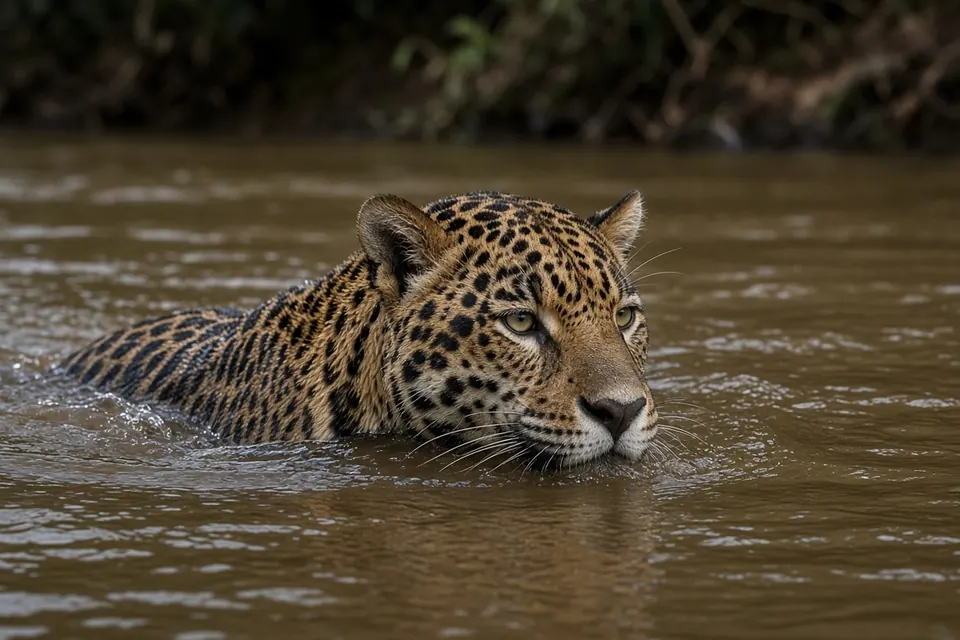

Home › Blog › Do jaguars hunt in water?
Do jaguars hunt in water? Yes, and in some wetlands it reshapes their whole ecology
Yes. Jaguars are strong swimmers and regularly take prey in and beside water, including fish, caiman, turtles and capybaras. In one seasonally flooded reserve in Brazil's Pantanal, a 2022 study found fish in 46% of jaguar scats and aquatic reptiles in 55%, while mammals appeared in only 11%. That aquatic food supply supported the highest jaguar density yet estimated and unusual social behaviour such as cooperative fishing.
The short answer
Among the six big cats on this site, the jaguar is the one most at home in water. It swims well, crosses rivers and lakes, and often hunts along riverbanks and in flooded wetlands. That is not a side habit. In some places aquatic animals dominate its diet, and that changes how densely jaguars can live and even how social they are. For the species basics, see our jaguar facts.
| Finding | Detail |
|---|---|
| Fish in jaguar scats (Pantanal study) | 46% of 138 scats |
| Aquatic reptiles in those scats | 55% |
| Mammals in those scats | 11% |
| Jaguar density in that reserve | 12.4 jaguars per 100 km² |
| Preferred prey across the jaguar's range | Capybara and giant anteater |
Scat percentages are frequency of occurrence: the share of droppings that contained each prey type. One dropping can contain more than one type, so the figures can add up to more than 100%. Pantanal figures are from Eriksson et al. (2022); preferred prey from Hayward et al. (2016).
A Pantanal population that lives on aquatic food
Charlotte Eriksson and colleagues studied jaguars in a seasonally flooded protected area in the Brazilian Pantanal and published the results in Ecology in 2022. They analysed 138 jaguar scats, ran camera traps for 8,065 trap nights, and fitted GPS collars to 13 jaguars.
The diet was unlike the usual picture of a jaguar living mainly on peccaries, deer and other mammals. Fish turned up in 46% of scats and aquatic reptiles in 55%. Mammals appeared in only 11%. The authors describe this as the first jaguar population known to feed extensively on fish and to consume mammals so little. Those aquatic subsidies, energy moving from water into the jaguar's food web, supported an estimated density of 12.4 jaguars per 100 km², which they report as the highest jaguar density estimate to date.
They also saw behaviour that is rare for this mostly solitary cat: cooperative fishing, adults of the same sex travelling together, and play between same sex adults. The paper's wider point is that aquatic subsidies, often discussed for omnivores, can reshape the ecology of an obligate carnivore too.

What jaguars prefer across their whole range
Not every jaguar lives in a flooded wetland. Matt Hayward and colleagues reviewed 25 studies covering 3,214 jaguar kills across the species' range and published the analysis in Frontiers in Ecology and Evolution in 2016.
They found that jaguars significantly preferred capybara and giant anteater, and avoided agoutis, carnivorans, primates, the black eared opossum and tapirs. Prey selection tracked abundance and herd size more than body size alone. Accessible prey weighed about 6 to 60 kg; preferred prey weighed about 45 to 85 kg; and the mean mass of significantly preferred prey was 32 ± 13 kg, giving a predator to prey body mass ratio of about 1 to 0.53, which is smaller than for many other solitary big cats.
Capybaras are semi aquatic rodents that live near rivers and lakes, so even this range wide preference list has a strong water link. The review also notes that jaguar diets are unusually diverse and include turtles, fish, crocodilians and other aquatic prey, which fits the jaguar's habit of using wet habitats.
How a jaguar kills aquatic and armoured prey
The IUCN SSC Cat Specialist Group describes the jaguar as the only big cat that regularly kills prey by piercing the skull with its canines. That skull bite, plus a powerful head and robust teeth, suits tough or dangerous prey such as turtles and caiman as well as mammals. Jaguars also break the necks of large prey and kill small prey with a blow to the head. You can read more under jaguar bite and hunting.
This is different from the leopard's tree caching strategy in Africa and Asia. Leopards often hoist kills into trees to stop hyenas stealing them; see why do leopards drag their kills into trees? Jaguars, living where the competitor mix and habitats differ, lean more on water edge ambush and a killing bite built for hard prey.
Where this happens
Jaguars range from Mexico to northern Argentina and are most often found in wet lowland habitats: rainforest, swamps and seasonally flooded wetlands such as the Pantanal, usually below 1,000 m. The Amazon holds most of the world's jaguars. Wetlands with abundant fish, caiman and capybaras are exactly the places where aquatic hunting pays off. Our habitats guide puts the jaguar's wetlands in context with the other big cats.
Key takeaways
- Jaguars swim well and regularly hunt fish, caiman, turtles, capybaras and other water linked prey.
- In one Pantanal study, fish appeared in 46% of scats and aquatic reptiles in 55%, with mammals in only 11%.
- That aquatic food supply supported 12.4 jaguars per 100 km² and unusual social behaviour including cooperative fishing.
- Across the range, preferred prey include capybara and giant anteater; preferred prey mass is about 45 to 85 kg.
- The jaguar's skull piercing bite suits tough aquatic and armoured prey.
Frequently asked questions
Do jaguars hunt in water?
Yes. Jaguars are strong swimmers and regularly take fish, caiman, turtles and other aquatic or semi aquatic prey. In a Pantanal study, fish appeared in 46% of jaguar scats and aquatic reptiles in 55%.
Do jaguars eat fish?
Yes. In a seasonally flooded Pantanal reserve, fish turned up in 46% of 138 jaguar scats, the first population described as feeding extensively on fish.
What is a jaguar's favourite prey?
Across the range, a review of 3,214 kills found jaguars significantly prefer capybara and giant anteater. Preferred prey weigh about 45 to 85 kg.
Are jaguars social when they fish?
Usually jaguars are solitary, but the Pantanal study documented cooperative fishing and other same sex adult interactions where aquatic food was abundant.
Cite this page
APA: BigCatWise. (2026, October 30). Do jaguars hunt in water?. https://bigcatwise.com/blog/do-jaguars-hunt-in-water.html
MLA: "Do jaguars hunt in water?." BigCatWise, 30 Oct. 2026, bigcatwise.com/blog/do-jaguars-hunt-in-water.html.
Chicago: BigCatWise. "Do jaguars hunt in water?." Last modified October 30, 2026. https://bigcatwise.com/blog/do-jaguars-hunt-in-water.html.
Please check the date you accessed the page and adjust to your teacher's or journal's style guide.
Sources
- Eriksson, Kantek, Miyazaki, Morato, dos Santos-Filho, Ruprecht, Peres and Levi (2022) Extensive aquatic subsidies lead to territorial breakdown and high density of an apex predator, Ecology 103(1): e03543. DOI 10.1002/ecy.3543
- Hayward, Kamler, Montgomery, Newlove, Rostro-Garcia, Sales and Van Valkenburgh (2016) Prey preferences of the jaguar Panthera onca reflect the post-Pleistocene demise of large prey, Frontiers in Ecology and Evolution 3: 148. DOI 10.3389/fevo.2015.00148
- IUCN SSC Cat Specialist Group: Jaguar
- San Diego Zoo Wildlife Alliance: Jaguar
Figures are rounded summaries of the sources above. Wild populations are hard to count, so estimates change as new surveys are published.